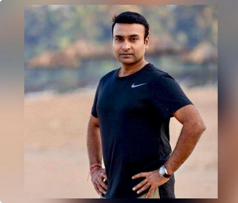

Telangana, IN - Thursday August 06, 2020 - Seven Pages
It wasn't a dream & The buzz of the little world
One morning, when Gregor Samsa woke from troubled dreams, he found himself transformed in his bed into a horrible vermin.
He lay on his armour-like back, and if he lifted his head a little he could see his brown belly,
slightly domed and divided by arches into stiff sections. The bedding was hardly able to cover it and seemed
ready to slide off any moment.
"What's happened to me?" he thought. It wasn't a dream. His room,
a proper human room although a little too small, lay peacefully between its four familiar walls.

I am still hopeful of making an India comeback: 37-year-old spinner Amit Mishra
Leg-spinner Amit Mishra, who last featured for Team India in a T20I in 2017,
said he is still hopeful for a comeback into the national team, adding, "I'm not someone who will keep playing just for IPL."
He stated, "I've always tried to stay away from...negativity, as there are very few people in life who'd motivate
you...Self-motivation is very important."
.png)
GC Murmu appointed as CAG a day after resigning as J&K's Lieutenant Governor
A labourer has found three diamonds with net weight of 7.5 carat worth ₹30 lakh to ₹35 lakh at a diamond mine in Madhya Pradesh.
The diamonds will be auctioned as per government rules, Panna district's diamond officer R K Pandey said.
After deducting 12% tax, the labourer, identified as Subal, will get the remaining 88% of the sale proceeds.
.png)
Labourer finds diamonds weighing 7.5 carat worth ₹35 lakh in MP mine
Girish Chandra Murmu has been appointed as the Comptroller and Auditor General of India (CAG), the Ministry of Finance said in an order.
This comes a day after Murmu stepped down as the Lieutenant Governor of Jammu and Kashmir.
Before taking over as J&K's Lieutenant Governor, Murmu served as the Expenditure Secretary in the Finance Ministry.